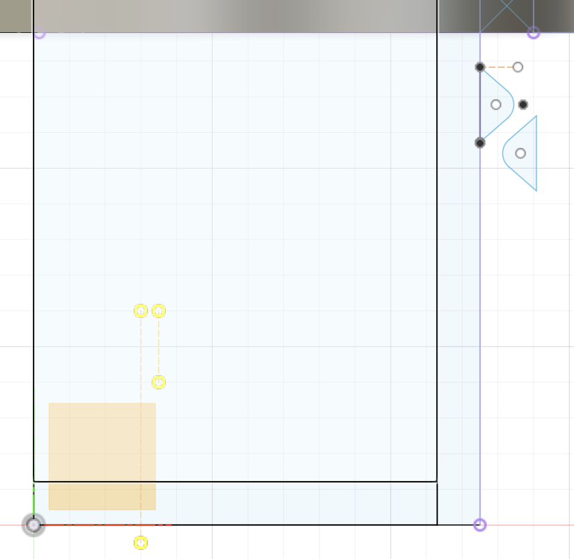

Steps of the Tutorial:
1. The biggest theme of this tutorial is using the revolve and pattern tools. We create a sketch profile only on one side, but by using the revolve tool, we can make the profile go 360 or by how many degrees we want. This especially works if we are making a circular container. If the container has weird edges, more thinking will have to be done when using the revolve tool. For example, from multivariable calculus, we have a y=x line going from (0,0,0) and then we are revolving it, we get a cone. That is just to put it into perspective of how edges and the revolve tool works.
2. The sketch profile is separated into four bodies: container main, container thread, lid main, and lid thread. This is done by carefully selecting the pieces we want after creating a whole sketch profile for the whole bottle.
3. After that, I need to make the actual threading profile, so these are like triangles with rounded tips spaced not very far from each other.

4. Then, I create a coil to make a path for the thread.
5. With the path and the profile for the threading complete, I then use the sweep tool. The sweep tool allows for me to select the profile I want to sweep around a sepcific path, in this case, I select it to be the outer edge of my coil. I also use an offset plane right at the bottom of the lid.
6. Then, I intersect the body that was sweeping with the body of the container in order to get the actual thread.
7. This whole time, I have only been making 1 start. I want multiple starts, so now I use the circular pattern. I let the center of the lid be my center and the thread body be the body I want to make a circular pattern out of.
8. I repeat this to make the threading for container lid.